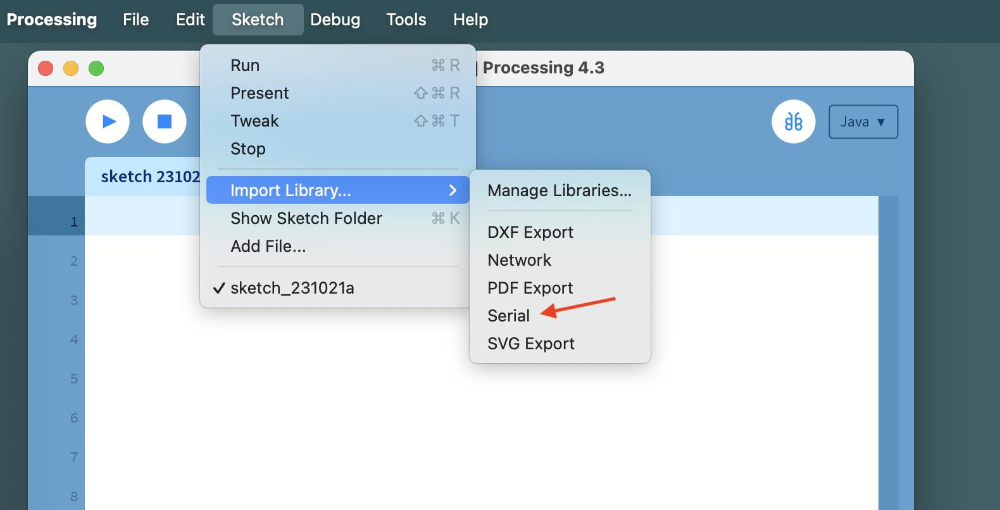
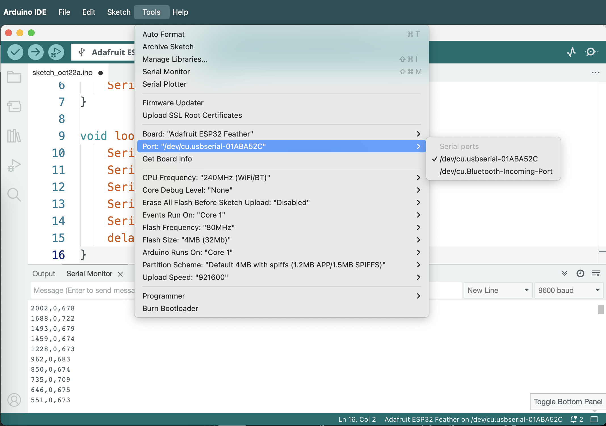
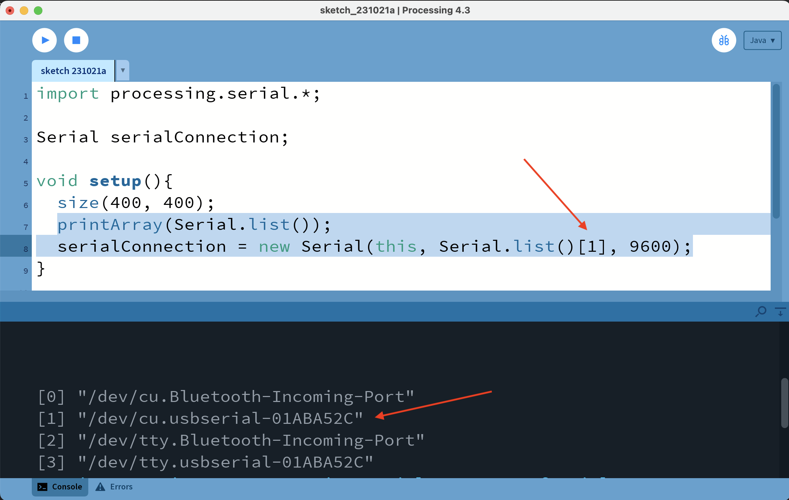

Just like we were able to receive the data from the serial port using the Serial Monitor built into ArduinoIDE we can receive it with other application that have the capability. One important thing to remember is that only one application can be connected to a given serial port at a time. This means that if you are viewing the data with the Serial Monitor you won't be able to recieve it in, for example, Processing. You will need to close one connection to enable another.
Processing is a popular creative coding platform. It includes a Serial communication library and is capable of receiving serial data.To enable this functionality in your Processing sketch first you need to verify that the library is installed. This is typically true by default but if you see it missing you can install it via Processing library manager.
To use the library we need to add it to our sketch. You can do that by clicking on the name of the library in the dropdown window - this will add the following line to the beginning of your sketch:
import processing.serial.*;
You can also add this line to your sketch manually.
We will need to declare a Serial object in the code and store a new Serail connection there for access.
Serial serialConnection;
void setup(){
size(400, 400);
serialConnection = new Serial(this, "nameOfSerialPort", 9600);
}
There are several ways to obtain the name of your serial port. You can check the ArduinoIDE setting and copy it from there.
This tends to be easier for Windows users, since in that OS the port names assume the format COM*, e.g. COM4. On *nix systems (Mac OS and Linux) the names tend to be longer and more convoluted conforming to the format /dev/cu.* as in the image above. To avoid spelling mistakes you can always list all the serial ports available in Processing as an array and reference the port from that array that your ESP32 is connected to.
printArray(Serial.list());
serialConnection = new Serial(this, Serial.list()[1], 9600);

The other parameters that go into the Serial object instantiation are this - a reference to this Processing sketch - and the baud rate 9600, which should match the baud rate we established in the code for ESP32. We're essentially trying to establish the connection between this program and the serial port that the ESP32 is connected to at a specific baud rate. Lastly, we need to specify the character that will represent the end of a single transmission by calling bufferUntil() function and passing that character into it. We end out transmission with a "new line" characer, and will supply it in the format '\n'. You can also use its ASCII number - 10.
Once we've established the connection we will use serialEvent function as described in the documentation to respond to the incoming data. This function is called every time a new serial message comes through the serial connection and is received. The port (or the connection) is passed into the funciton as the argument, and will be available to read from inside the function scope.
If we're only sending and receiving one value the task is trivial - read the value that comes in as a String, convert it whichever format we need and apply it accordingly. In the example below we're using the value of a potentiometer to control the diameter of a circle in Processing.
import processing.serial.*;
Serial serialConnection;
float diameter = 0;
void setup(){
size(400, 400);
printArray(Serial.list());
serialConnection = new Serial(this, Serial.list()[1], 9600);
serialConnection.bufferUntil('\n');
}
void draw(){
background(0);
fill(255, 0, 0);
circle(width*0.5, height*0.5, diameter);
}
void serialEvent(Serial connection){
String incomingValue = connection.readString();
diameter = map(float(incomingValue), 0, 4095, 0, width);
}
In the case when we have 2 or more values coming from the serial port we need to perform a few additional steps. In the example below we'll use the value of a potentiometer (the first value in the message) to set the diameter of a circle, the value of the button (the second parameter) - to determine whether it will be red or green, and the value of a photoresistor (the third) - to determine the horizontal position of the circle. First we need to remove the end-of-line character from the transmission by calling trim(). Then we'll split the string from the port into an array of values using the delimiter we established in our code for the ESP32, - in our case ',' - and convert the resulting strings into floating-point numbers. Then we will check the length of the resulting array to make sure all the values have been transmitted and decoded properly, and if the length matches our expectations we'll assign those values as needed. Note: floats don't convert directly to booleans in Java, so we'll need to first cast the button parameter, which would have a value of "1.0" or "0.0" into an integer.
import processing.serial.*;
Serial serialConnection;
float diameter = 0;
float posX, posY;
boolean redFill = true;
void setup(){
size(400, 400);
printArray(Serial.list());
serialConnection = new Serial(this, Serial.list()[1], 9600);
serialConnection.bufferUntil('\n');
posX = width*0.5;
posY = height*0.5;
}
void draw(){
background(0);
if(redFill){
fill(255, 0, 0);
}else{
fill(0, 255, 0);
}
circle(posX, posY, diameter);
}
void serialEvent(Serial connection){
String incomingValues = connection.readString();
if(incomingValues != null){
incomingValues = incomingValues.trim();
float sensorValues[] = float(split(incomingValues, ','));
if(sensorValues.length == 3){
diameter = map(sensorValues[0], 0, 4095, 0, width);
redFill = boolean(int(sensorValues[1]));
posX = map(sensorValues[2], 0, 4095, 0, width);
}
}
}